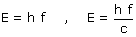
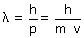

Dualidad Una onda luminosa de frecuencia f puede comportarse como un chorro de partículas (Fotones) cuya energía y momento lineal son:  Un chorro de particulas de masa m y momento lineal p puede comportarse como una onda cuya longitud de onda es:  El comportamiento que se muestra depende del tamaño del objeto con que se interaccione: Si la longitud de onda es menor que el tamaño del objeto aparecerá el comportamiento ondulatorio: el objeto será iluminado y podrá verse su imagen Si la longitud de onda es mayor que el tamaño del objeto aparecerá el comportamiento corpuscular: el objeto será golpeado |